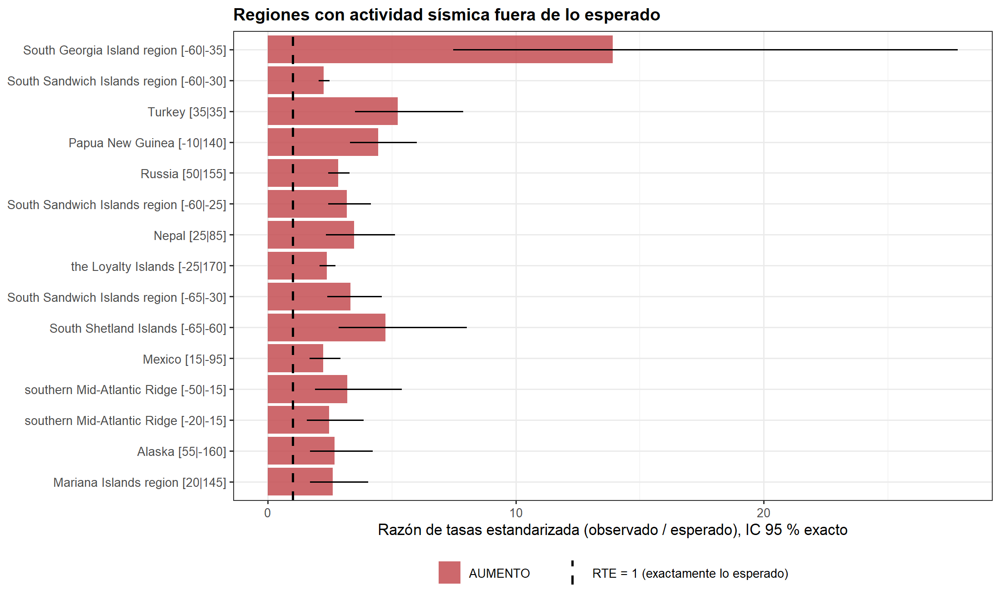
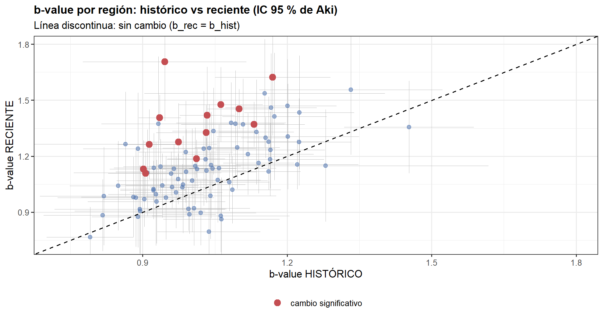
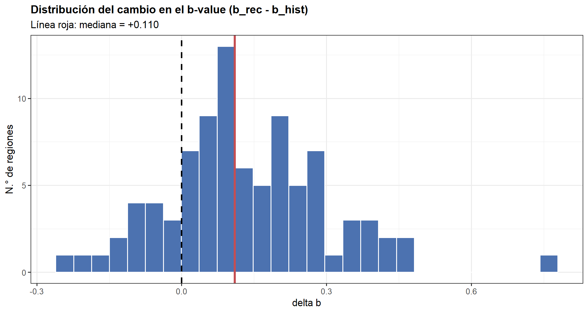
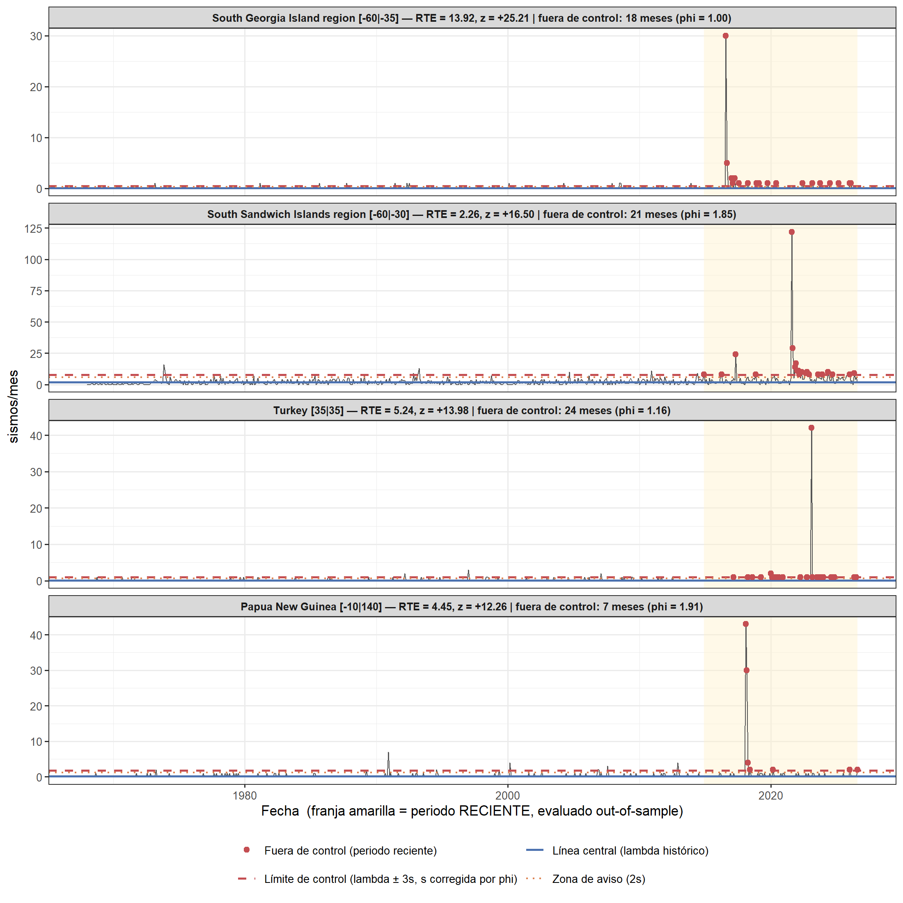
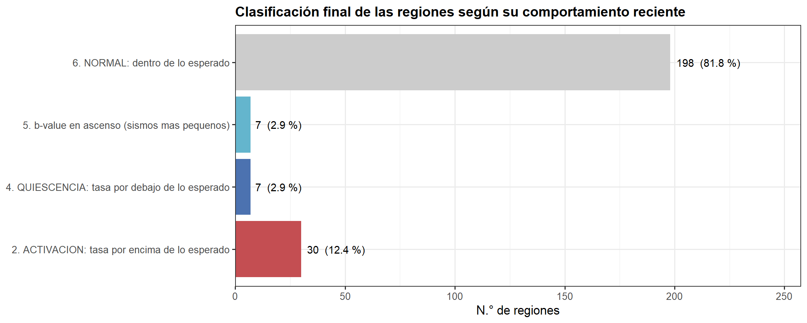

7 7. Núcleo del análisis: ¿qué regiones están fuera de lo esperado?
7.1 7.1 Deriva global del catálogo y factor de estandarización
X_h_glob <- sum(panel_hist$n_eventos)
X_r_glob <- sum(panel_rec$n_eventos)
tasa_h_glob <- X_h_glob / M_HIST # sismos/mes en todo el catálogo (histórico)
tasa_r_glob <- X_r_glob / M_REC # sismos/mes en todo el catálogo (reciente)
F_GLOBAL <- tasa_r_glob / tasa_h_glob
# Test exacto de la deriva global (binomial condicional)
p0_glob <- M_REC / (M_HIST + M_REC)
bt_glob <- binom.test(X_r_glob, X_h_glob + X_r_glob, p0_glob, alternative = "two.sided")- Tasa global HISTÓRICA: 110.68 sismos/mes (62,315 en 563 meses)
- Tasa global RECIENTE: 129.47 sismos/mes (18,255 en 141 meses)
- Factor de deriva global f = 1.1697 (+17.0 % respecto al histórico)
- p = 2.84e-75 < 0.05 → se RECHAZA la tasa global no cambió. Conclusión: la tasa global del catálogo SÍ cambió
La tasa global del catálogo es 1.17 veces la histórica (+17.0 %). El cambio es SIGNIFICATIVO, de modo que existe una deriva de fondo común a todo el catálogo. Comparar cada región contra su propio pasado SIN corregir esta deriva produciría un resultado absurdo: casi todas las regiones aparecerían «anómalas», porque todas comparten el mismo aumento de cobertura instrumental. Decisión: se adopta la estandarización indirecta. El valor esperado de cada región se multiplica por f = 1.170, y la pregunta pasa a ser si la región cambió más que el conjunto. Se reportan las dos versiones (bruta y estandarizada) para que la diferencia sea auditable, pero el criterio principal es la estandarizada.
7.2 7.2 Contrastes de tasa por región: Poisson exacto y cuasi-Poisson
# Corrección de Benjamini-Hochberg (q-valores, FDR)
bh_fdr <- function(p) p.adjust(replace_na(p, 1), method = "BH")
phi_por_region <- setNames(dispersion$phi, dispersion$region)
# p-valor bilateral de un z normal (NA si z no es finito)
p_z <- function(z) if (is.finite(z)) 2 * pnorm(-abs(z)) else NA_real_
resumen_reg <- panel %>%
group_by(region, region_nombre) %>%
summarise(Th = sum(periodo == "HISTORICO"),
Tr = sum(periodo == "RECIENTE"),
Xh = sum(n_eventos[periodo == "HISTORICO"]),
Xr = sum(n_eventos[periodo == "RECIENTE"]),
.groups = "drop") %>%
filter(Xh + Xr >= 10) # muestra insuficiente para inferencia
contraste <- function(region, region_nombre, Th, Tr, Xh, Xr) {
lam_h <- Xh / Th # tasa histórica (sismos/mes)
lam_r <- Xr / Tr # tasa reciente
esperado_bruto <- lam_h * Tr # esperado sin corregir la deriva global
esperado <- esperado_bruto * F_GLOBAL # esperado ESTANDARIZADO
# (1) Test EXACTO condicional de dos tasas de Poisson (estandarizado).
# Bajo H0, Xr | (Xh + Xr) ~ Binomial(Xh + Xr, p0), con la exposición reciente ponderada por f.
p0 <- (Tr * F_GLOBAL) / (Th + Tr * F_GLOBAL)
bt <- binom.test(Xr, Xh + Xr, p0, alternative = "two.sided")
lo <- bt$conf.int[1]; hi <- bt$conf.int[2]
# IC de la razón de tasas ESTANDARIZADA (RTE)
rte_lo <- if (lo < 1) (lo / (1 - lo)) * (Th / (Tr * F_GLOBAL)) else NA_real_
rte_hi <- if (hi < 1) (hi / (1 - hi)) * (Th / (Tr * F_GLOBAL)) else Inf
# (2) Z CUASI-POISSON: varianza inflada por el factor de dispersión
phi <- max(unname(phi_por_region[region]), 1, na.rm = TRUE)
z_q <- if (esperado > 0) (Xr - esperado) / sqrt(phi * esperado) else NA_real_
# (3) Versiones SIN estandarizar, solo para cuantificar el efecto
z_bruto <- if (esperado_bruto > 0) (Xr - esperado_bruto) / sqrt(phi * esperado_bruto) else NA_real_
z_ing <- if (esperado_bruto > 0) (Xr - esperado_bruto) / sqrt(esperado_bruto) else NA_real_ # Poisson puro "ingenuo"
tibble(region = region, region_nombre = region_nombre,
meses_hist = Th, meses_rec = Tr, n_hist = Xh, n_rec = Xr,
tasa_hist = lam_h, tasa_rec = lam_r,
esperado_rec = esperado, exceso = Xr - esperado,
razon_tasas = if (lam_h > 0) lam_r / lam_h else NA_real_, # bruta
RTE = if (esperado > 0) Xr / esperado else NA_real_, # estandarizada
RTE_IC_inf = rte_lo, RTE_IC_sup = rte_hi,
phi = phi,
p_poisson = bt$p.value,
z_quasi = z_q, p_quasi = p_z(z_q),
p_bruto = p_z(z_bruto),
p_ingenuo = p_z(z_ing))
}
res <- bind_rows(pmap(resumen_reg, contraste)) %>%
mutate(q_poisson = bh_fdr(p_poisson),
q_quasi = bh_fdr(p_quasi),
q_bruto = bh_fdr(p_bruto),
q_ingenuo = bh_fdr(p_ingenuo),
signif_poisson = q_poisson < ALPHA,
signif_quasi = q_quasi < ALPHA,
signif_bruto = q_bruto < ALPHA,
direccion = if_else(RTE > 1, "AUMENTO", "DESCENSO"))
comparativa <- tibble(
Criterio = c("Poisson puro, SIN estandarizar (ingenuo)",
"Cuasi-Poisson, SIN estandarizar",
"Poisson exacto ESTANDARIZADO",
"Cuasi-Poisson ESTANDARIZADO <-- PRINCIPAL"),
`Corrige sobredispersion` = c("no", "si", "no", "si"),
`Corrige deriva del catalogo` = c("no", "no", "si", "si"),
`Regiones significativas` = c(sum(res$q_ingenuo < ALPHA), sum(res$signif_bruto),
sum(res$signif_poisson), sum(res$signif_quasi))
) %>%
mutate(`% del total` = round(`Regiones significativas` / nrow(res) * 100, 1))
kab(comparativa)| Criterio | Corrige sobredispersion | Corrige deriva del catalogo | Regiones significativas | % del total |
|---|---|---|---|---|
| Poisson puro, SIN estandarizar (ingenuo) | no | no | 106 | 43.8 |
| Cuasi-Poisson, SIN estandarizar | si | no | 52 | 21.5 |
| Poisson exacto ESTANDARIZADO | no | si | 83 | 34.3 |
| Cuasi-Poisson ESTANDARIZADO <– PRINCIPAL | si | si | 37 | 15.3 |
Regiones evaluadas: 242.
Sin corrección por multiplicidad (p < 0.05 en bruto) habría 65 regiones significativas; de ellas, ~12 serían falsos positivos esperados solo por azar.
La tabla comparativa cuantifica el efecto de cada corrección, y esa es su utilidad principal. El criterio ingenuo (Poisson puro sin estandarizar) señala 106 regiones de 242; el criterio correcto (cuasi-Poisson estandarizado) señala 37. Las dos correcciones actúan sobre errores distintos: la ESTANDARIZACIÓN elimina la deriva común del catálogo (un sesgo sistemático compartido por todas las regiones) y la CUASI-POISSON amplía la varianza por el agrupamiento en réplicas (un exceso de dispersión). Ambas van en la misma dirección: reducir falsos positivos. RESULTADO: 37 de 242 regiones (15.3 %) presentan una actividad reciente estadísticamente fuera de lo esperado, una vez descontadas la deriva instrumental y la dependencia entre eventos, con control de FDR al 5 %.
7.3 7.3 Ranking de regiones fuera de lo esperado
ranking <- res %>%
filter(signif_quasi) %>%
arrange(desc(abs(z_quasi))) %>%
select(region_nombre, region, n_hist, tasa_hist, n_rec, tasa_rec, esperado_rec, exceso,
RTE, RTE_IC_inf, RTE_IC_sup, phi, z_quasi, q_quasi, direccion)
# RTE = razón de tasas estandarizada = observado / esperado (1.0 = exactamente lo esperado)
ranking %>%
slice_head(n = 20) %>%
mutate(q_quasi = fp(q_quasi), across(where(is.numeric), ~ round(.x, 4))) %>%
kab(digits = 4)| region_nombre | region | n_hist | tasa_hist | n_rec | tasa_rec | esperado_rec | exceso | RTE | RTE_IC_inf | RTE_IC_sup | phi | z_quasi | q_quasi | direccion |
|---|---|---|---|---|---|---|---|---|---|---|---|---|---|---|
| South Georgia Island region | -60|-35 | 13 | 0.0231 | 53 | 0.3759 | 3.8083 | 49.1917 | 13.9169 | 7.4841 | 27.8291 | 1.0000 | 25.2072 | 8.07e-138 | AUMENTO |
| South Sandwich Islands region | -60|-30 | 1,085 | 1.9272 | 718 | 5.0922 | 317.8476 | 400.1524 | 2.2589 | 2.0528 | 2.4846 | 1.8503 | 16.5004 | 4.41e-59 | AUMENTO |
| Turkey | 35|35 | 43 | 0.0764 | 66 | 0.4681 | 12.5967 | 53.4033 | 5.2395 | 3.5152 | 7.8820 | 1.1582 | 13.9811 | 1.64e-42 | AUMENTO |
| Papua New Guinea | -10|140 | 82 | 0.1456 | 107 | 0.7589 | 24.0217 | 82.9783 | 4.4543 | 3.3096 | 6.0136 | 1.9065 | 12.2615 | 8.82e-33 | AUMENTO |
| Russia | 50|155 | 379 | 0.6732 | 315 | 2.2340 | 111.0270 | 203.9730 | 2.8371 | 2.4355 | 3.3032 | 2.6587 | 11.8720 | 8.01e-31 | AUMENTO |
| South Sandwich Islands region | -60|-25 | 119 | 0.2114 | 111 | 0.7872 | 34.8607 | 76.1393 | 3.1841 | 2.4361 | 4.1591 | 1.6319 | 10.0948 | 2.35e-22 | AUMENTO |
| Nepal | 25|85 | 55 | 0.0977 | 56 | 0.3972 | 16.1121 | 39.8879 | 3.4757 | 2.3525 | 5.1369 | 1.0496 | 9.6995 | 1.05e-20 | AUMENTO |
| the Loyalty Islands | -25|170 | 521 | 0.9254 | 364 | 2.5816 | 152.6255 | 211.3745 | 2.3849 | 2.0803 | 2.7319 | 3.2051 | 9.5570 | 3.67e-20 | AUMENTO |
| South Sandwich Islands region | -65|-30 | 80 | 0.1421 | 78 | 0.5532 | 23.4358 | 54.5642 | 3.3282 | 2.4049 | 4.6045 | 1.8612 | 8.2617 | 3.86e-15 | AUMENTO |
| South Shetland Islands | -65|-60 | 28 | 0.0497 | 39 | 0.2766 | 8.2025 | 30.7975 | 4.7546 | 2.8519 | 8.0226 | 1.7391 | 8.1542 | 8.50e-15 | AUMENTO |
| Mexico | 15|-95 | 135 | 0.2398 | 88 | 0.6241 | 39.5479 | 48.4521 | 2.2252 | 1.6814 | 2.9321 | 1.0732 | 7.4371 | 2.26e-12 | AUMENTO |
| southern Mid-Atlantic Ridge | -50|-15 | 33 | 0.0586 | 31 | 0.2199 | 9.6673 | 21.3327 | 3.2067 | 1.8994 | 5.4012 | 1.0645 | 6.6500 | 5.91e-10 | AUMENTO |
| southern Mid-Atlantic Ridge | -20|-15 | 51 | 0.0906 | 37 | 0.2624 | 14.9403 | 22.0597 | 2.4765 | 1.5768 | 3.8564 | 1.0682 | 5.5220 | 6.24e-07 | AUMENTO |
| Alaska | 55|-160 | 47 | 0.0835 | 37 | 0.2624 | 13.7685 | 23.2315 | 2.6873 | 1.6983 | 4.2239 | 1.3444 | 5.3996 | 1.15e-06 | AUMENTO |
| Mariana Islands region | 20|145 | 52 | 0.0924 | 40 | 0.2837 | 15.2333 | 24.7667 | 2.6258 | 1.6942 | 4.0428 | 1.6028 | 5.0123 | 8.68e-06 | AUMENTO |
| Russia | 50|160 | 354 | 0.6288 | 288 | 2.0426 | 103.7033 | 184.2967 | 2.7772 | 2.3688 | 3.2537 | 14.1478 | 4.8115 | 2.27e-05 | AUMENTO |
| Southwest Indian Ridge | -35|55 | 62 | 0.1101 | 41 | 0.2908 | 18.1627 | 22.8373 | 2.2574 | 1.4832 | 3.4033 | 1.5055 | 4.3674 | 1.79e-04 | AUMENTO |
| Greece | 30|25 | 43 | 0.0764 | 28 | 0.1986 | 12.5967 | 15.4033 | 2.2228 | 1.3298 | 3.6610 | 1.0651 | 4.2053 | 3.51e-04 | AUMENTO |
| Japan | 25|125 | 348 | 0.6181 | 155 | 1.0993 | 101.9456 | 53.0544 | 1.5204 | 1.2500 | 1.8424 | 1.6722 | 4.0634 | 6.16e-04 | AUMENTO |
| Saint Helena | -10|-15 | 67 | 0.1190 | 40 | 0.2837 | 19.6275 | 20.3725 | 2.0380 | 1.3420 | 3.0595 | 1.4208 | 3.8578 | 1.38e-03 | AUMENTO |
Regiones estadísticamente fuera de lo esperado: 37 de 242. RTE = razón de tasas estandarizada = observado / esperado (1.0 = exactamente lo esperado).
top <- ranking %>% slice_head(n = 15)
if (nrow(top) > 0) {
top <- top %>%
mutate(etiqueta = paste0(region_nombre, " [", region, "]"),
lo = if_else(is.finite(RTE_IC_inf), RTE_IC_inf, RTE),
hi = if_else(is.finite(RTE_IC_sup), pmin(RTE_IC_sup, RTE * 4), RTE),
etiqueta = factor(etiqueta, levels = rev(etiqueta))) # el más extremo arriba
lab_rte1 <- "RTE = 1 (exactamente lo esperado)"
print(
ggplot(top, aes(RTE, etiqueta)) +
geom_col(aes(fill = direccion), alpha = 0.85) +
geom_segment(aes(x = lo, xend = hi, yend = etiqueta), linewidth = 0.6) +
geom_vline(aes(xintercept = 1, linetype = lab_rte1), linewidth = 0.9) +
scale_fill_manual(values = c(AUMENTO = ROJO, DESCENSO = AZUL), name = NULL) +
scale_linetype_manual(values = setNames("dashed", lab_rte1), name = NULL) +
labs(title = "Regiones con actividad sísmica fuera de lo esperado",
x = "Razón de tasas estandarizada (observado / esperado), IC 95 % exacto", y = NULL)
)
}
n_sube <- sum(ranking$direccion == "AUMENTO")
n_baja <- sum(ranking$direccion == "DESCENSO")
peor <- ranking[1, ]30 regiones muestran un aumento significativo de la tasa y 7 un descenso significativo, siempre respecto al comportamiento esperado tras descontar la deriva global del catálogo. El caso más extremo es South Georgia Island region región [-60|-35]: observó 53 sismos en la ventana reciente frente a 3.8 esperados, es decir, 13.92 veces lo esperado (IC 95 %: [7.48 , 27.83], z cuasi-Poisson = +25.21, q = 8.07e-138). El intervalo de confianza es tan informativo como el p-valor: cuando NO contiene el 1, el cambio es estadísticamente sólido, y su amplitud indica con qué precisión se conoce la magnitud del cambio. Las regiones con descenso merecen la misma atención analítica: pueden reflejar una disminución real de la sismicidad de fondo, pero también el final de una secuencia de réplicas que inflaba artificialmente su línea base histórica.
7.4 7.4 Mapa de anomalías (interactivo)
mapa <- res %>%
mutate(lat_c = as.numeric(sub("\\|.*$", "", region)) + PASO_MALLA / 2,
lon_c = as.numeric(sub("^.*\\|", "", region)) + PASO_MALLA / 2,
log_rt = log2(if_else(RTE > 0, RTE, NA_real_)))
sig <- mapa %>% filter(signif_quasi)
no_sig <- mapa %>% filter(!signif_quasi)
# Paleta divergente: azul = descenso, rojo = aumento (log2 RTE acotado a [-1, 1])
pal <- colorNumeric(palette = "RdBu", domain = c(-1, 1), reverse = TRUE)
# Tooltips en HTML (htmltools)
tooltip_html <- function(d) {
lapply(seq_len(nrow(d)), function(i) {
htmltools::HTML(paste0(
"<b>", htmltools::htmlEscape(d$region_nombre[i]), "</b><br>",
"Región (malla 5°): ", htmltools::htmlEscape(d$region[i]), "<br>",
"Sismos recientes: ", d$n_rec[i], " (esperados: ", sprintf("%.1f", d$esperado_rec[i]), ")<br>",
"RTE: ", sprintf("%.2f", d$RTE[i]), "<br>",
"z cuasi-Poisson: ", sprintf("%+.2f", d$z_quasi[i]), "<br>",
"q (FDR): ", formatC(d$q_quasi[i], format = "e", digits = 2)
))
})
}
top_etiquetas <- sig %>% arrange(desc(abs(z_quasi))) %>% slice_head(n = 10)
leaflet(options = leafletOptions(minZoom = 1, worldCopyJump = TRUE)) %>%
addProviderTiles(providers$CartoDB.Positron) %>%
setView(lng = 0, lat = 15, zoom = 2) %>%
addCircleMarkers(data = no_sig, lng = ~lon_c, lat = ~lat_c, radius = 3,
stroke = FALSE, fillColor = GRIS, fillOpacity = 0.6,
label = tooltip_html(no_sig)) %>%
addCircleMarkers(data = sig, lng = ~lon_c, lat = ~lat_c,
radius = ~sqrt(pmin(pmax(abs(z_quasi) * 22, 40), 700)) * 0.9,
color = "black", weight = 1, opacity = 0.9,
fillColor = ~pal(pmax(pmin(log_rt, 1), -1)), fillOpacity = 0.9,
label = tooltip_html(sig)) %>%
addLabelOnlyMarkers(data = top_etiquetas, lng = ~lon_c, lat = ~lat_c, label = ~region_nombre,
labelOptions = labelOptions(noHide = TRUE, direction = "right", textOnly = TRUE,
style = list("font-size" = "10px", "font-weight" = "bold"))) %>%
addLegend(position = "bottomright", pal = pal, values = c(-1, 1), opacity = 1,
title = "log2(RTE)<br>> 0 aumento<br>< 0 descenso") %>%
addLegend(position = "bottomleft", colors = GRIS, labels = "Región evaluada (sin anomalía)", opacity = 0.7) %>%
addControl(html = "<b>Distribución geográfica de las anomalías sísmicas</b><br>tamaño = |z| cuasi-Poisson · color = dirección del cambio",
position = "topright")El mapa permite distinguir entre una anomalía aislada (una celda suelta, más probablemente una secuencia local de réplicas) y una anomalía regionalmente coherente (varias celdas contiguas del mismo color, que sugiere un cambio a escala de segmento tectónico y es un hallazgo mucho más robusto). La coherencia espacial funciona como una validación independiente que ningún p-valor por sí solo puede aportar: celdas vecinas son unidades de análisis distintas, de modo que su concordancia no es un artefacto del mismo test.
7.5 7.5 Segunda vía de anomalía: cambio en el b-value (test de Utsu)
Una región puede tener el mismo número de sismos y aun así estar comportándose de forma anómala: si el reparto entre sismos pequeños y grandes cambia, cambia el riesgo.
# Utsu (1992): contraste de igualdad de dos b-values basado en AIC
test_utsu <- function(b1, n1, b2, n2) {
if (!all(is.finite(c(b1, b2))) || min(n1, n2) < 2 || b1 <= 0 || b2 <= 0) {
return(c(dA = NA_real_, p = NA_real_))
}
N <- n1 + n2
dA <- -2 * N * log(N) +
2 * n1 * log(n1 + n2 * b1 / b2) +
2 * n2 * log(n1 * b2 / b1 + n2) - 2
c(dA = dA, p = min(exp(-dA / 2 - 2), 1))
}
MIN_EVENTOS_B <- 50
filas_b <- dfm %>%
filter(region %in% regiones_validas) %>%
group_split(region) %>%
map(function(g) {
mh <- g$mag[g$periodo == "HISTORICO"]
mr <- g$mag[g$periodo == "RECIENTE"]
if (length(mh) < MIN_EVENTOS_B || length(mr) < MIN_EVENTOS_B) return(NULL)
a <- b_value_aki(mh); b <- b_value_aki(mr)
if (!is.finite(a$b) || !is.finite(b$b)) return(NULL)
u <- test_utsu(a$b, a$n, b$b, b$n)
tibble(region = g$region[1], region_nombre = g$region_nombre[1],
n_hist = a$n, n_rec = b$n,
b_hist = a$b, sigma_b_hist = a$sigma,
b_rec = b$b, sigma_b_rec = b$sigma,
delta_b = b$b - a$b, dAIC = u[["dA"]], p_utsu = u[["p"]])
})
bvals <- bind_rows(filas_b)
if (nrow(bvals) > 0) {
bvals <- bvals %>%
mutate(q_utsu = bh_fdr(p_utsu),
signif_b = q_utsu < ALPHA,
interpretacion = case_when(
!signif_b ~ "sin cambio",
delta_b < 0 ~ "b BAJA: mas proporcion de sismos GRANDES",
TRUE ~ "b SUBE: mas proporcion de sismos pequenos"))
}
n_b_total <- nrow(bvals)
n_b_sig <- if (n_b_total) sum(bvals$signif_b) else 0L
n_baja_b <- if (n_b_total) sum(bvals$delta_b < 0 & bvals$signif_b) else 0LRegiones con b-value estimable en ambos periodos: 89. Con cambio significativo del b-value (FDR < 0.05): 13.
if (n_b_total > 0) {
bvals %>%
filter(signif_b) %>%
arrange(delta_b) %>%
slice_head(n = 15) %>%
select(region_nombre, region, n_hist, n_rec, b_hist, b_rec, delta_b, p_utsu, q_utsu, interpretacion) %>%
mutate(p_utsu = fp(p_utsu), q_utsu = fp(q_utsu),
across(where(is.numeric) & !c(n_hist, n_rec), ~ round(.x, 4))) %>%
kab(digits = 4)
}| region_nombre | region | n_hist | n_rec | b_hist | b_rec | delta_b | p_utsu | q_utsu | interpretacion |
|---|---|---|---|---|---|---|---|---|---|
| Kermadec Islands region | -30|-180 | 1,104 | 517 | 1.0115 | 1.1858 | 0.1743 | 4.70e-03 | 4.44e-02 | b SUBE: mas proporcion de sismos pequenos |
| the Loyalty Islands | -25|170 | 521 | 364 | 0.9061 | 1.1086 | 0.2025 | 4.99e-03 | 4.44e-02 | b SUBE: mas proporcion de sismos pequenos |
| Solomon Islands | -15|160 | 639 | 212 | 0.9016 | 1.1311 | 0.2295 | 7.19e-03 | 4.92e-02 | b SUBE: mas proporcion de sismos pequenos |
| the Kermadec Islands | -35|-180 | 1,334 | 494 | 1.1315 | 1.3700 | 0.2385 | 6.11e-04 | 9.06e-03 | b SUBE: mas proporcion de sismos pequenos |
| Russia | 50|155 | 379 | 315 | 1.0320 | 1.3263 | 0.2942 | 1.74e-03 | 2.21e-02 | b SUBE: mas proporcion de sismos pequenos |
| Indonesia | -5|135 | 690 | 146 | 0.9741 | 1.2758 | 0.3017 | 5.90e-03 | 4.76e-02 | b SUBE: mas proporcion de sismos pequenos |
| Solomon Islands | -10|155 | 742 | 176 | 0.9136 | 1.2634 | 0.3498 | 3.40e-04 | 6.06e-03 | b SUBE: mas proporcion de sismos pequenos |
| South Sandwich Islands region | -60|-30 | 1,085 | 718 | 1.1001 | 1.4530 | 0.3530 | 2.86e-08 | 1.27e-06 | b SUBE: mas proporcion de sismos pequenos |
| Russia | 40|145 | 1,248 | 114 | 1.0341 | 1.4186 | 0.3845 | 3.07e-03 | 3.42e-02 | b SUBE: mas proporcion de sismos pequenos |
| Tonga | -25|-175 | 570 | 211 | 1.0622 | 1.4768 | 0.4146 | 1.32e-04 | 2.94e-03 | b SUBE: mas proporcion de sismos pequenos |
| Indonesia | -10|100 | 365 | 103 | 1.1700 | 1.6237 | 0.4536 | 6.42e-03 | 4.76e-02 | b SUBE: mas proporcion de sismos pequenos |
| Papua New Guinea | -10|150 | 1,739 | 512 | 0.9354 | 1.4064 | 0.4710 | 2.19e-14 | 1.95e-12 | b SUBE: mas proporcion de sismos pequenos |
| South Sandwich Islands region | -60|-25 | 119 | 111 | 0.9457 | 1.7064 | 0.7608 | 2.05e-05 | 6.07e-04 | b SUBE: mas proporcion de sismos pequenos |
if (n_b_total > 0) {
sigb <- bvals %>% filter(signif_b)
lim <- c(min(bvals$b_hist, bvals$b_rec) * 0.95, max(bvals$b_hist, bvals$b_rec) * 1.05)
print(
ggplot(bvals, aes(b_hist, b_rec)) +
geom_segment(aes(x = b_hist - 1.96 * sigma_b_hist, xend = b_hist + 1.96 * sigma_b_hist, yend = b_rec),
color = GRIS, linewidth = 0.3) +
geom_segment(aes(y = b_rec - 1.96 * sigma_b_rec, yend = b_rec + 1.96 * sigma_b_rec, xend = b_hist),
color = GRIS, linewidth = 0.3) +
geom_point(color = AZUL, alpha = 0.5, size = 1.8) +
geom_point(data = sigb, aes(color = "cambio significativo"), size = 3) +
geom_abline(slope = 1, intercept = 0, linetype = "dashed") +
scale_color_manual(values = c("cambio significativo" = ROJO), name = NULL) +
coord_cartesian(xlim = lim, ylim = lim) +
labs(title = "b-value por región: histórico vs reciente (IC 95 % de Aki)",
subtitle = "Línea discontinua: sin cambio (b_rec = b_hist)",
x = "b-value HISTÓRICO", y = "b-value RECIENTE")
)
med_delta <- median(bvals$delta_b)
print(
ggplot(bvals, aes(delta_b)) +
geom_histogram(bins = 28, fill = AZUL, color = "white") +
geom_vline(xintercept = 0, linetype = "dashed", linewidth = 0.9) +
geom_vline(xintercept = med_delta, color = ROJO, linewidth = 1.1) +
labs(title = "Distribución del cambio en el b-value (b_rec - b_hist)",
subtitle = sprintf("Línea roja: mediana = %+.3f", med_delta),
x = "delta b", y = "N.° de regiones")
)
}

De 89 regiones con muestra suficiente (≥ 50 sismos en cada periodo), 13 cambiaron significativamente su b-value y en 0 de ellas el b-value BAJÓ. Un descenso del b-value es un tipo de anomalía cualitativamente distinto al aumento de la tasa: la región no produce necesariamente más sismos, sino que el reparto de energía se desplaza hacia eventos de mayor tamaño. En la literatura sismológica esto se asocia a un aumento del esfuerzo diferencial acumulado en la falla. Por eso el diagnóstico final NO puede basarse solo en el conteo: una región con tasa normal, pero con b-value en descenso también está «fuera de lo esperado», y en términos de riesgo puede ser más preocupante que otra con muchos sismos pequeños.
7.6 7.6 ¿Cuándo empezó la desviación? Carta de control de Shewhart
candidatas <- if (nrow(ranking) > 0) {
ranking %>% slice_head(n = 4)
} else {
res %>% arrange(desc(abs(z_quasi))) %>% slice_head(n = 4)
}
candidatas <- candidatas %>% select(region, region_nombre, RTE, z_quasi)
datos_cc <- list(); limites_cc <- list()
for (i in seq_len(nrow(candidatas))) {
fila <- candidatas[i, ]
reg <- fila$region
g <- panel %>% filter(region == reg) %>% arrange(mes)
h <- g$n_eventos[g$periodo == "HISTORICO"]
lam <- mean(h)
phi <- max(res$phi[res$region == reg], 1)
sigma <- sqrt(phi * lam)
LCS <- lam + 3 * sigma
LCI <- max(lam - 3 * sigma, 0)
zona_a <- lam + 2 * sigma # zona de aviso (2 sigma)
n_fuera <- sum(g$periodo == "RECIENTE" & g$n_eventos > LCS)
titulo <- sprintf("%s [%s] — RTE = %.2f, z = %+.2f | fuera de control: %d meses (phi = %.2f)",
fila$region_nombre, reg, fila$RTE, fila$z_quasi, n_fuera, phi)
datos_cc[[i]] <- g %>%
transmute(panel = titulo, fecha = mes, n_eventos, periodo,
fuera = periodo == "RECIENTE" & n_eventos > LCS)
limites_cc[[i]] <- tibble(
panel = titulo,
y = c(lam, LCS, if (LCI > 0) LCI, zona_a),
tipo = c("Línea central (lambda histórico)", "Límite de control (lambda ± 3s, s corregida por phi)",
if (LCI > 0) "Límite de control (lambda ± 3s, s corregida por phi)", "Zona de aviso (2s)"))
}
d_cc <- bind_rows(datos_cc) %>% mutate(panel = factor(panel, levels = unique(panel)))
lim_cc <- bind_rows(limites_cc) %>% mutate(panel = factor(panel, levels = levels(d_cc$panel)))
t_central <- "Línea central (lambda histórico)"
t_control <- "Límite de control (lambda ± 3s, s corregida por phi)"
t_aviso <- "Zona de aviso (2s)"
t_fuera <- "Fuera de control (periodo reciente)"
ggplot(d_cc, aes(fecha, n_eventos)) +
geom_rect(data = tibble(xmin = MES_CORTE, xmax = max(d_cc$fecha)),
aes(xmin = xmin, xmax = xmax, ymin = -Inf, ymax = Inf),
inherit.aes = FALSE, fill = "#FFF2CC", alpha = 0.45) +
geom_line(color = "#555555", linewidth = 0.35) +
geom_hline(data = filter(lim_cc, tipo == t_central), aes(yintercept = y, color = tipo), linewidth = 0.8) +
geom_hline(data = filter(lim_cc, tipo == t_control), aes(yintercept = y, color = tipo),
linewidth = 0.8, linetype = "dashed") +
geom_hline(data = filter(lim_cc, tipo == t_aviso), aes(yintercept = y, color = tipo),
linewidth = 0.7, linetype = "dotted") +
geom_point(data = filter(d_cc, fuera), aes(color = t_fuera), size = 1.8) +
scale_color_manual(values = setNames(c(AZUL, ROJO, NARANJA, ROJO), c(t_central, t_control, t_aviso, t_fuera)),
name = NULL) +
facet_wrap(~ panel, ncol = 1, scales = "free_y") +
guides(color = guide_legend(nrow = 2)) +
labs(x = "Fecha (franja amarilla = periodo RECIENTE, evaluado out-of-sample)", y = "sismos/mes") +
theme(strip.text = element_text(size = 8.5, face = "bold"))
# --- Reglas de Western Electric sobre la región más anómala ---
reg0 <- candidatas$region[1]
g0 <- panel %>% filter(region == reg0) %>% arrange(mes)
lam0 <- mean(g0$n_eventos[g0$periodo == "HISTORICO"])
phi0 <- max(res$phi[res$region == reg0], 1)
s0 <- sqrt(phi0 * lam0)
r0 <- g0 %>% filter(periodo == "RECIENTE") %>% mutate(z = (n_eventos - lam0) / s0)
regla1 <- sum(abs(r0$z) > 3)
regla2 <- sum(rollsum(as.numeric(r0$z > 2), 3, fill = NA, align = "right") >= 2, na.rm = TRUE)
regla3 <- sum(rollsum(as.numeric(r0$z > 0), 8, fill = NA, align = "right") == 8, na.rm = TRUE)Región analizada: South Georgia Island region [-60|-35]
- Regla 1 (1 punto fuera de 3 sigma): 18 meses
- Regla 2 (2 de 3 puntos consecutivos > 2 s): 8 ocurrencias
- Regla 3 (8 puntos consecutivos sobre lambda): 0 ocurrencias
La carta de control añade la dimensión temporal que el test agregado no ofrece: permite distinguir un pico aislado (un único mes fuera de límites, típicamente un sismo principal con sus réplicas) de una desviación sostenida (varios meses consecutivos por encima de la línea central), que es la señal realmente preocupante. En la región más anómala se activan la regla 1 en 18 meses, la regla 2 en 8 ocasiones y la regla 3 en 0. La presencia de rachas (reglas 2 y 3) indica un cambio de NIVEL del proceso y no una fluctuación puntual: es la evidencia más fuerte de que la región opera en un régimen distinto al histórico. Nótese que los límites se calcularon SOLO con el histórico y se aplican al periodo reciente sin reajustarlos: es una validación out-of-sample genuina.
7.7 7.7 Diagnóstico combinado: construcción del target categórico es_anomala
diag_reg <- res %>%
select(region, region_nombre, n_hist, n_rec, esperado_rec, RTE, z_quasi, q_quasi, signif_quasi, phi)
if (n_b_total > 0) {
diag_reg <- diag_reg %>%
left_join(bvals %>% select(region, b_hist, b_rec, delta_b, q_utsu, signif_b), by = "region")
} else {
diag_reg <- diag_reg %>%
mutate(b_hist = NA_real_, b_rec = NA_real_, delta_b = NA_real_, q_utsu = NA_real_, signif_b = FALSE)
}
diag_reg <- diag_reg %>%
mutate(signif_b = replace_na(signif_b, FALSE),
tasa_alta = replace_na(signif_quasi & RTE > 1, FALSE),
tasa_baja = replace_na(signif_quasi & RTE < 1, FALSE),
b_baja = replace_na(signif_b & delta_b < 0, FALSE),
b_sube = replace_na(signif_b & delta_b > 0, FALSE),
diagnostico = case_when(
tasa_alta & b_baja ~ "1. CRITICA: mas sismos Y mas grandes",
tasa_alta ~ "2. ACTIVACION: tasa por encima de lo esperado",
b_baja ~ "3. VIGILANCIA: b-value en descenso (sismos mas grandes)",
tasa_baja ~ "4. QUIESCENCIA: tasa por debajo de lo esperado",
b_sube ~ "5. b-value en ascenso (sismos mas pequenos)",
TRUE ~ "6. NORMAL: dentro de lo esperado"),
es_anomala = as.integer(!str_starts(diagnostico, "6")))
resumen_diag <- diag_reg %>%
count(diagnostico) %>%
arrange(diagnostico) %>%
mutate(pct = round(n / sum(n) * 100, 1))
kab(resumen_diag)| diagnostico | n | pct |
|---|---|---|
| 2. ACTIVACION: tasa por encima de lo esperado | 30 | 12.4 |
| 4. QUIESCENCIA: tasa por debajo de lo esperado | 7 | 2.9 |
| 5. b-value en ascenso (sismos mas pequenos) | 7 | 2.9 |
| 6. NORMAL: dentro de lo esperado | 198 | 81.8 |
colores_diag <- c("1." = "#8B0000", "2." = ROJO, "3." = NARANJA, "4." = AZUL, "5." = "#64B5CD", "6." = "#CCCCCC")
ggplot(resumen_diag, aes(n, diagnostico, fill = substr(diagnostico, 1, 2))) +
geom_col(show.legend = FALSE) +
geom_text(aes(label = sprintf("%d (%.1f %%)", n, n / nrow(diag_reg) * 100)), hjust = -0.1, size = 3.3) +
scale_fill_manual(values = colores_diag) +
scale_x_continuous(expand = expansion(mult = c(0, 0.3))) +
labs(title = "Clasificación final de las regiones según su comportamiento reciente",
x = "N.° de regiones", y = NULL)
El objetivo categórico es_anomala queda construido sobre criterios estadísticos explícitos y auditables, no sobre un umbral arbitrario: 44 de 242 regiones (18.2 %) están fuera de lo esperado. La categoría CRÍTICA (0 regiones) es la que concentra el riesgo: son regiones donde coinciden DOS señales estadísticamente independientes entre sí (más eventos de los esperados Y un desplazamiento del reparto de magnitudes hacia sismos grandes). La concurrencia de dos contrastes independientes es una evidencia mucho más robusta que cualquiera de los dos por separado, porque la probabilidad conjunta de un falso positivo doble es el producto de las individuales. La categoría QUIESCENCIA no debe descartarse: en sismología, un periodo anómalo de calma (quiescencia sísmica) ha sido documentado como precursor en algunas secuencias, aunque su valor predictivo sigue siendo objeto de debate científico.